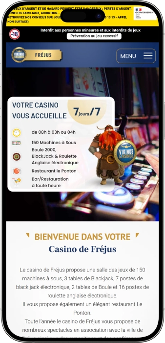
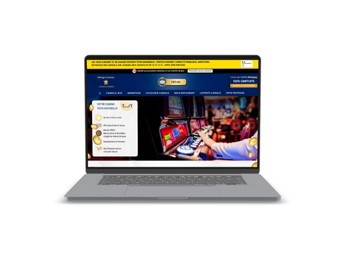

Offre de bienvenue exclusive de
Offre de bienvenue exclusive de
Le Casino Incontournable de Fréjus, Côte d'Azur
Top casinos
Détails du bonus
Casino
Bonus
Note
Tours gratuits
Plus d'infos
Obtenir
Avantages
- Cherchez-vous un casino de confiance à Fréjus, sur la Côte d'Azur ? Certifié ISO 9001 version 2015, nous offrons 150 machines à sous, des tables de jeux homologuées et des jackpots redistribuant plus de 63 millions d'euros par an. Voici pourquoi des milliers de joueurs varois nous choisissent :
-
150 machines à sous certifiées avec jackpots progressifs jusqu'à 32 000 €
-
Certifié ISO 9001 v.2015 — qualité et équité de jeu garanties
-
Tables Blackjack, Boule 2000 & Roulette anglaise électronique
-
Programme de fidélité Carte BiHappy — gratuit, points & VIP
-
Restaurant Le Ponton & bar ouverts à toute heure, 7j/7
-
Animations, spectacles et expositions toute l'année à Fréjus
- Rejoignez des milliers de joueurs satisfaits sur la Côte d'Azur qui profitent chaque soir de notre salle de jeux certifiée et de nos services de qualité supérieure. Notre équipe vous accueille 7j/7 à Fréjus dès 8h du matin.
Casino de Fréjus App



À propos du Casino de Fréjus
Situé au cœur de Fréjus, sur la Côte d'Azur varoise, nous sommes l'établissement de référence pour les jeux et le divertissement dans le Var. Certifié ISO 9001, nous accueillons nos visiteurs dans une salle de 150 machines à sous et des tables de jeux homologuées.
- Certification ISO 9001 version 2015 obtenue
- 150 machines à sous avec jackpots progressifs certifiés
- Lancement de la Carte BiHappy — programme de fidélité gratuit
- Partenariats spectacles avec la Ville de Fréjus établis
Notre établissement opère sous agrément légal français avec certification ISO 9001 v.2015 garantissant l'équité et la transparence. Toutes nos machines sont auditées régulièrement et conformes aux normes de l'Autorité de Régulation des Jeux en Ligne (ARJEL) et du contrôle des jeux.

Nous enrichissons continuellement notre offre de divertissements pour les joueurs de la Côte d'Azur. Nos outils de jeu responsable et notre équipe dédiée font de nous le casino de confiance du Var. Venez nous rendre visite à Fréjus et découvrez une expérience unique !
Jeux & Jackpots au Casino de Fréjus
Découvrez l'univers complet des jeux au Casino de Fréjus, Côte d'Azur
Notre casino de Fréjus vous plonge dans un univers de divertissement exceptionnel au cœur du Var, sur la magnifique Côte d'Azur. Nous proposons une salle de jeux moderne et homologuée, avec 150 machines à sous soigneusement sélectionnées, des tables de blackjack professionnelles, la Boule 2000 et la roulette anglaise électronique. Certifiés ISO 9001 version 2015, nous garantissons à chaque visiteur une expérience de jeu équitable, transparente et sécurisée. Notre établissement accueille chaque soir des joueurs passionnés venus de tout le Var, de Saint-Raphaël, Cannes, Draguignan et de l'ensemble de la Côte d'Azur. Nous redistribuons plus de 63 millions d'euros en jackpots chaque année, faisant de nous l'un des casinos les plus généreux de Provence-Alpes-Côte d'Azur.
Nos 150 machines à sous : variété et jackpots progressifs
Êtes-vous à la recherche des meilleures machines à sous à Fréjus ? Notre salle de jeux propose une collection de 150 machines à sous certifiées, régulièrement renouvelée avec les derniers titres des plus grands fabricants mondiaux. Nous accueillons régulièrement de nouvelles machines — 8 nouveaux appareils et 17 nouveaux jeux récemment introduits — pour offrir à nos joueurs varois une expérience toujours renouvelée. Les thèmes varient des aventures exotiques aux classiques intemporels, avec des mécaniques modernes : cascades de gains, bonus rounds, free spins intégrés et multiplicateurs. Les taux de redistribution (RTP) de nos machines sont contrôlés et conformes aux exigences réglementaires françaises, vous assurant une équité de jeu totale.
- Machines à jackpots progressifs : Des titres comme Jewel of the Dragon, 5 Treasures, Quick Hit Link Fire et Fortune Harmony offrent des jackpots progressifs pouvant atteindre plusieurs dizaines de milliers d'euros. Le jackpot Jewel of the Dragon a récemment été décroché à 28 632 € et Fortune Harmony à 19 253 €.
- Multi Jeux : Notre machine Multi Jeux est l'une des plus plébiscitées de notre salle, avec un jackpot récemment remporté à 32 000 €. Elle propose plusieurs jeux en un seul appareil, pour une expérience variée et captivante.
- Nouvelles machines régulièrement : Nous introduisons fréquemment de nouveaux appareils et jeux pour renouveler l'expérience de nos visiteurs fidèles de la Côte d'Azur. Notre équipe de gestion sélectionne les modèles les plus tendance du marché français et international.
- Accessibilité et confort : Notre salle est aménagée pour offrir un maximum de confort — sièges ergonomiques, éclairage adapté, ambiance sonore immersive. Des hôtesses qualifiées sont présentes en permanence pour vous accompagner et répondre à toutes vos questions.
Tables de jeux : Blackjack, Boule 2000 et Roulette anglaise électronique
Notre casino de Fréjus vous propose une offre complète de jeux de table, encadrés par des croupiers professionnels formés aux standards les plus exigeants de la profession. Nous disposons de 3 tables de blackjack classique ainsi que de 7 postes de blackjack électronique, permettant à tous — débutants comme confirmés — de profiter de ce jeu emblématique. La règle du blackjack appliquée dans notre établissement suit les normes françaises : le croupier tire à 16 et s'arrête à 17, avec possibilité de doubler et de partager les paires. Le RTP théorique du blackjack classique dépasse 99 % avec une stratégie de base optimale, ce qui en fait l'un des meilleurs jeux pour le joueur averti.
- Blackjack classique (3 tables) : Profitez de l'adrénaline du blackjack traditionnel face à nos croupiers expérimentés. Chaque table accueille jusqu'à 7 joueurs simultanément, avec des mises adaptées à tous les niveaux de jeu.
- Blackjack électronique (7 postes) : Idéal pour les joueurs souhaitant s'initier à leur rythme ou affiner leur stratégie, nos postes électroniques proposent une interface intuitive et des mises accessibles. Un excellent moyen de se familiariser avec les règles sans pression.
- Boule 2000 (2 tables) : La Boule est un jeu typiquement français, emblématique des casinos de la Côte d'Azur et de Provence. Facile à prendre en main, il offre une ambiance conviviale et des sensations uniques. Nos 2 tables de Boule 2000 attirent chaque soir une clientèle fidèle de joueurs varois.
- Roulette anglaise électronique (16 postes) : Nos 16 postes de roulette anglaise électronique vous permettent de vivre l'excitation de la roulette à votre propre rythme. L'interface numérique offre une précision parfaite, un historique des tirages, et la possibilité de miser sur une grande variété de combinaisons.
Jackpots : combien redistribuons-nous aux joueurs de Fréjus et du Var ?
Nous sommes fiers d'être l'un des casinos les plus généreux de la région PACA. En cette seule année, nous avons déjà redistribué plus de 63 200 972 € en jackpots à nos joueurs heureux. Chaque jour, des gains sont distribués — 115 323 € redistribués en une seule journée récemment. Ce mois-ci, c'est plus de 10 384 317 € qui sont repartis dans les poches de nos visiteurs de Fréjus, Saint-Raphaël, Cannes et du Var. Ces chiffres témoignent de notre engagement à offrir des machines à sous à hauts taux de redistribution et des jackpots progressifs accessibles à tous.
| Jackpot | Gain | Jeu |
|---|---|---|
| Multi Jeux | 32 000 € | Machines à sous |
| Jewel of the Dragon | 28 632 € | Machines à sous |
| 5 Treasures | 22 873 € | Machines à sous |
| Quick Hit Link Fire | 20 053 € | Machines à sous |
| Fortune Harmony | 19 253 € | Machines à sous |
Certification ISO 9001 : pourquoi jouer dans un casino certifié à Fréjus ?
Depuis l'obtention de notre certification ISO 9001 version 2015, le Casino de Fréjus s'est positionné comme un établissement de référence en matière de qualité de service sur la Côte d'Azur. Cette norme internationale reconnaît notre engagement envers des processus rigoureux, la satisfaction de nos clients et l'amélioration continue de notre offre. Pour vous, joueur, cela signifie des équipements régulièrement vérifiés, un personnel qualifié et formé aux meilleures pratiques, et une transparence totale dans la gestion de nos jeux. Peu de casinos français peuvent se targuer d'une telle certification, ce qui fait de notre établissement varois un choix évident pour les joueurs exigeants de la région PACA.
Horaires et accès : venez nous rendre visite à Fréjus
Notre salle de jeux est ouverte 7 jours sur 7, de 8h à 3h ou 4h du matin, soit l'une des amplitudes horaires les plus larges parmi les casinos de la Côte d'Azur. Que vous soyez matinal ou noctambule, nous vous accueillons dans une ambiance chaleureuse et professionnelle. Fréjus est idéalement situé entre Saint-Raphaël et Puget-sur-Argens, facilement accessible depuis l'autoroute A8 (sortie Fréjus/Saint-Raphaël) et bien desservi par les transports en commun varois. Notre parking est disponible à proximité de l'établissement pour votre commodité.
- Ouvert tous les jours : De 8h à 3h (semaine) ou 4h (week-end et jours fériés) — profitez de la salle de jeux à l'heure qui vous convient le mieux.
- Accès facile depuis le Var : Depuis Saint-Raphaël (5 min), Draguignan (30 min), Cannes (40 min) et Nice (1h), notre casino est aisément accessible pour toute la clientèle de la région PACA.
- Entrée et tenue : L'accès à notre salle des jeux est réservé aux personnes majeures (18 ans et plus). Une tenue correcte est de mise pour garantir l'ambiance élégante qui caractérise notre établissement.
- Jeu responsable : Nous appliquons strictement la réglementation française sur le jeu responsable. Des outils d'auto-exclusion, de limitation de mise et d'information sur les risques sont disponibles auprès de notre équipe et à l'entrée de la salle.
Fournisseurs de logiciels
Fidélité, Animations & Restaurant à Fréjus
Profitez de la Carte BiHappy, des animations et du Restaurant Le Ponton au Casino de Fréjus
Le Casino de Fréjus ne se limite pas à une salle de jeux : c'est une véritable destination de divertissement sur la Côte d'Azur, alliant programme de fidélité premium, animations variées, spectacles exclusifs et restauration gastronomique. Notre Carte BiHappy, entièrement gratuite, vous ouvre les portes d'un univers de privilèges réservés à nos membres. Chaque année, nous organisons des dizaines d'événements en partenariat avec la Ville de Fréjus — spectacles live, expositions artistiques, conférences thématiques — pour animer votre soirée bien au-delà des machines à sous et des tables de jeux. Notre restaurant Le Ponton et notre bar, ouverts à toute heure, complètent cette offre unique dans le Var. Ici, vous ne venez pas seulement jouer : vous vivez une expérience complète dans l'un des casinos les plus animés de Provence-Alpes-Côte d'Azur.
La Carte BiHappy : notre programme de fidélité gratuit à Fréjus
Vous demandez-vous comment profiter au maximum de votre visite au Casino de Fréjus ? La réponse est simple : la Carte BiHappy. Ce programme de fidélité entièrement gratuit est conçu pour récompenser chaque joueur dès sa première visite. En vous inscrivant, vous commencez immédiatement à cumuler des points à chaque partie jouée sur nos 150 machines à sous et à nos tables de jeux. Ces points sont ensuite échangeables contre de nombreux avantages : réductions au Restaurant Le Ponton, bons de réduction chez nos commerçants partenaires de Fréjus et du Var, accès prioritaire à notre salle, et invitations à nos événements exclusifs. Le statut VIP, accessible après accumulation d'un certain nombre de points, vous offre des privilèges supplémentaires : accueil personnalisé, accès à des animations privées et offres promotionnelles réservées.
- Inscription gratuite et immédiate : Obtenez votre Carte BiHappy dès l'accueil de notre casino à Fréjus. Aucun engagement, aucun frais : vous bénéficiez de vos premiers avantages dès le premier soir.
- Cumul de points à chaque visite : Chaque euro misé sur nos machines à sous ou nos tables de jeux génère des points BiHappy. Des opérations spéciales permettent de multiplier vos points — comme nos soirées Points x5 régulièrement organisées.
- Statut VIP — les plus grands avantages : Nos membres VIP bénéficient d'un accueil personnalisé à l'entrée de la salle des jeux, d'invitations exclusives à des soirées privées, d'offres promotionnelles dédiées et d'un service de conciergerie pour rendre leur soirée inoubliable à Fréjus.
- Réductions chez les partenaires : La Carte BiHappy est acceptée dans un réseau de commerçants partenaires à Fréjus et dans tout le Var — boutiques, hôtels, restaurants — vous permettant de profiter d'offres exclusives bien au-delà des murs du casino.
- Accès facilité à la salle de jeux : Grâce à votre Carte BiHappy, vous accédez rapidement à notre salle des jeux sans attente. Un avantage apprécié lors des soirées animées du week-end sur la Côte d'Azur.
Animations et événements : bien plus qu'un casino à Fréjus
Le Casino de Fréjus est reconnu dans tout le Var comme un acteur culturel et festif incontournable. Toute l'année, nous proposons des animations quotidiennes et des événements spéciaux en partenariat avec la Ville de Fréjus. Nos soirées de spectacles accueillent des artistes locaux et nationaux, dans une salle de spectacle aménagée pour offrir une expérience unique à nos visiteurs. Nous organisons également des expositions artistiques et des conférences thématiques ouvertes à tous les amateurs de culture de la région PACA. Nos animations régulières — comme les soirées Points x5 sur la Carte BiHappy, les tournois de machines à sous avec dotations en euros, ou encore les soirées à thème — garantissent une programmation renouvelée chaque semaine pour les joueurs fidèles de Fréjus, Saint-Raphaël et du Var.
| Animation | Fréquence | Avantage |
|---|---|---|
| Points x5 | Régulier | Points BiHappy ×5 |
| Spectacles live | Mensuel | Entrée + concert |
| Expositions | Trimestriel | Accès gratuit |
| Conférences | Ponctuel | Culture & réseau |
| Tournois slots | Hebdo | Dotations en € |
Restaurant Le Ponton : gastronomie et convivialité au Casino de Fréjus
Notre restaurant Le Ponton est bien plus qu'un simple service de restauration : c'est une adresse gastronomique reconnue sur la Côte d'Azur, idéalement intégrée à notre établissement pour vous offrir une soirée complète. Que vous souhaitiez dîner avant votre session de jeu, savourer un repas entre deux parties ou terminer votre soirée autour d'une belle table, Le Ponton vous accueille à toute heure dans un cadre élégant et chaleureux. Notre bar est également ouvert en continu, proposant cocktails, boissons et petite restauration pour accompagner votre expérience de jeu à toute heure du jour et de la nuit. Les membres de la Carte BiHappy bénéficient de réductions exclusives au Restaurant Le Ponton, rendant chaque soirée encore plus avantageuse.
- Cuisine de qualité inspirée de la Côte d'Azur : Le Ponton propose une carte mettant en valeur les produits locaux varois et les saveurs méditerranéennes — poissons frais, spécialités provençales, desserts maison. Une cuisine généreuse et raffinée à deux pas de la salle des jeux.
- Bar ouvert à toute heure : Notre bar, accessible 7j/7 pendant toute la durée d'ouverture du casino, propose une large sélection de boissons, cocktails et encas. Idéal pour une pause conviviale entre amis ou en famille pendant votre visite à Fréjus.
- Coffrets cadeaux disponibles : Envie de faire plaisir ? Nous proposons des coffrets cadeaux casino comprenant une sélection de services au Casino de Fréjus — une idée originale et mémorable pour offrir une soirée inoubliable sur la Côte d'Azur à vos proches.
- Réductions BiHappy au restaurant : Présentez votre Carte BiHappy au Restaurant Le Ponton pour bénéficier de réductions exclusives réservées à nos membres fidèles. Plus vous jouez, plus vous économisez à table — une récompense supplémentaire pour nos joueurs du Var.
Jeu responsable : notre engagement envers les joueurs de Fréjus
Le Casino de Fréjus s'engage pleinement dans une politique de jeu responsable, conformément à la réglementation française et à notre certification ISO 9001. Nous disposons de plusieurs outils pour accompagner nos joueurs : possibilité de s'auto-exclure temporairement ou définitivement, aide à la fixation de limites de temps et de budget, et accès à des ressources d'information sur les risques liés au jeu. Notre personnel est formé pour identifier les comportements à risque et orienter les joueurs concernés vers des structures d'aide spécialisées comme Joueurs Info Service (09 74 75 13 13). La pratique du jeu doit rester un divertissement — nous visons à garantir que chaque visiteur repart de notre casino de la Côte d'Azur avec le sourire, quel que soit le résultat de sa soirée.
FAQ
Nous proposons 150 machines à sous, 3 tables de blackjack, 7 postes de blackjack électronique, 2 tables de Boule 2000 et 16 postes de roulette anglaise électronique. Tous nos jeux sont certifiés et contrôlés conformément à la réglementation française des jeux.
Obtenez votre Carte BiHappy directement à l'accueil de notre casino à Fréjus — c'est entièrement gratuit. Vous cumulez immédiatement des points à chaque jeu, échangeables contre des avantages, réductions au Restaurant Le Ponton et accès aux animations exclusives.
Oui, notre casino est certifié ISO 9001 version 2015, attestant de la qualité et de la transparence de nos services. Nous opérons sous agrément légal français et toutes nos machines sont régulièrement auditées par les autorités compétentes pour garantir l'équité des jeux.
Notre casino de Fréjus est ouvert 7 jours sur 7, de 8h à 3h en semaine et jusqu'à 4h le week-end. Cette amplitude horaire, l'une des plus larges de la Côte d'Azur, vous permet de profiter de votre session de jeu à n'importe quelle heure de la journée ou de la nuit.
Oui, notre restaurant Le Ponton est intégré à l'établissement et ouvert à toute heure pendant les horaires du casino. Nous proposons une cuisine inspirée des saveurs méditerranéennes et provençales, ainsi qu'un bar disponible en continu pour cocktails et encas.
Nos 150 machines à sous incluent de nombreux titres à jackpots progressifs comme Jewel of the Dragon, 5 Treasures ou Fortune Harmony. Cette année, nous avons déjà redistribué plus de 63 millions d'euros de jackpots à nos joueurs. Inscrivez-vous à la Carte BiHappy pour maximiser vos avantages à chaque visite.
Toute l'année, nous proposons des animations quotidiennes, des spectacles live, des expositions et des conférences en partenariat avec la Ville de Fréjus. Notre programme complet est disponible sur notre site et à l'accueil de notre établissement, sur la Côte d'Azur varoise.
Notre casino est facilement accessible depuis Saint-Raphaël en seulement 5 minutes, par la RD37 ou l'avenue de Verdun. Depuis Cannes comptez 40 min via l'autoroute A8 (sortie Fréjus). Un parking est disponible à proximité de notre établissement pour votre confort.